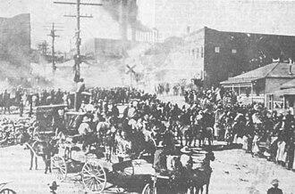
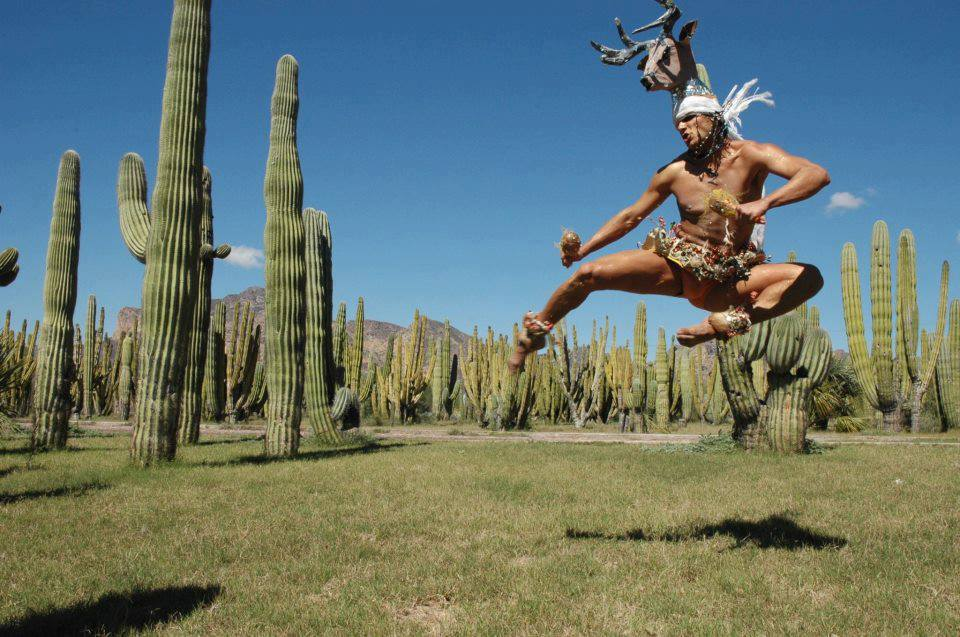
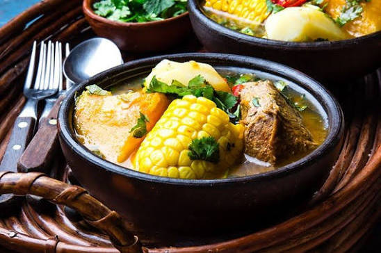
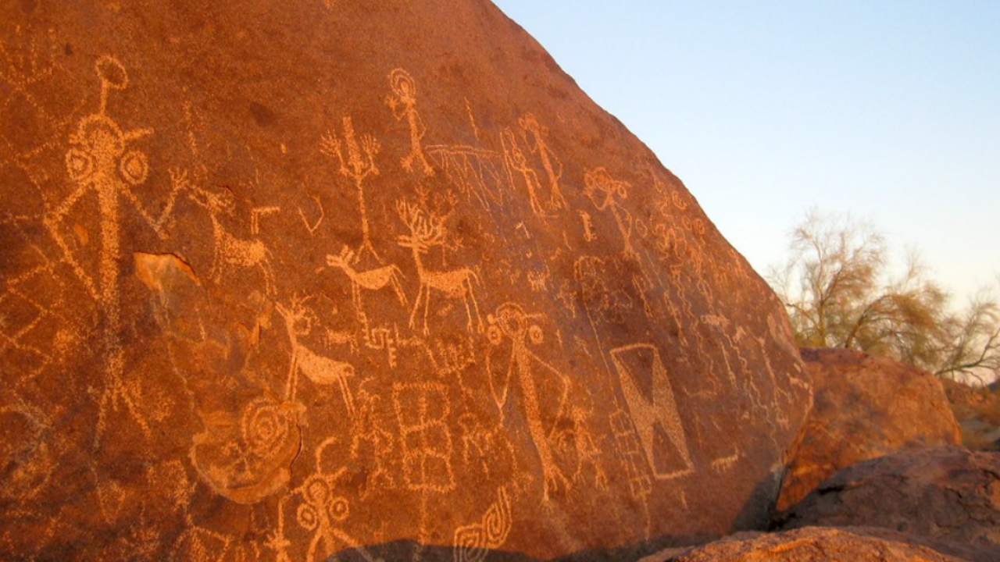
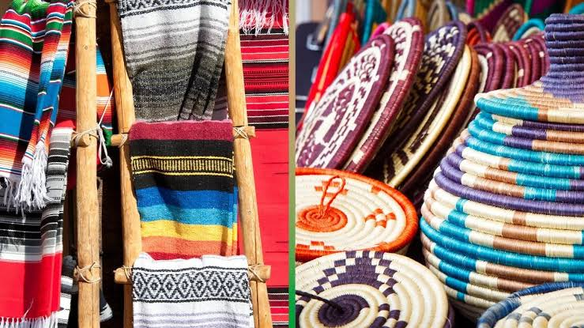
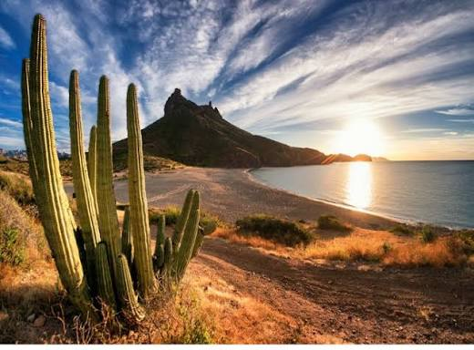
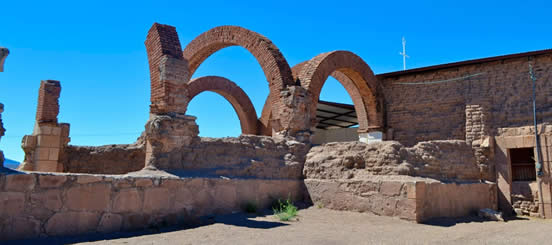

Sonora no solo se recorre: se descubre.
Desiertos, sierras, costa, ciudades fronterizas, pueblos históricos y comunidades con tradiciones diversas. Un mismo territorio, muchas historias.

Turismo
Turismo cultural en Sonora
Rutas, patrimonio y expresiones vivas del estado.

Historia y patrimonio
Historia de Sonora
De las misiones a la Revolución: procesos y memorias.

Cultura
Arte y cultura sonorense
Música, danza, festivales e identidad regional.
Conocimiento
Ciencia y tecnología
Investigación, innovación y desarrollo regional.

Cultura
Gastronomía sonorense
Carne asada, tortillas de harina, bacanora y memoria familiar.

Historia y patrimonio
Arqueología del norte
Sociedades antiguas a través de sus restos materiales.

Conocimiento
Economía naranja
Creatividad, arte y cultura como motores de desarrollo.

Turismo
Naturaleza y aventura
Del desierto al golfo de California.

Historia y patrimonio
Rutas históricas
Recorridos que conectan lugares y acontecimientos.
Noticias oficiales SECTUR
Esta sección alojará las noticias y comunicados de la Secretaría de Turismo de Sonora, generando convenios y contenido verificado.
Ver noticias